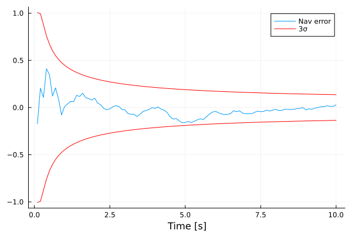

KalmanFilterEngine.jl
This package provides a set of Kalman filters that can estimate the state of a continuous-time dynamical system given as imput a sequence of discrete-time measurements
\[\begin{array}{c} \dot x = f(t,x) + w\\ y_k = h(t_k,x_k) + r_k \end{array}\]
where $w$ is a zero-mean continuous time white process noise with two-sided power spectral density equal to $W$, and $r_k$ is a zero-mean discrete time white measurement noise with covariance equal to $R_k$.
Installation
Just type:
using Pkg
Pkg.add(url="https://github.com/FraCpl/KalmanFilterEngine.jl")Capabilities and basic usage
Four different filters are implemented in KalmanFilterEngine.jl
- Extended Kalman Filter (EKF)
- UD-factorized Extended Kalman Filter (UDEKF)
- Unscented Kalman Filter (UKF)
- Square-root Unscented Kalman Filter (SRUKF)
The type of filter can be chosen when initializing the navigation state via the four different initialization functions available: NavState (EKF), NavStateUD (UDEKF), NavStateUKF (UKF), and NavStateSRUKF (SRUKF). KalmanFilterEngine.jl provides the two necessary key functions that need to be used to build a Kalman filter: kalmanPropagate! and kalmanUpdate!. Whichever the filter chosen by the user, these two functions will have the same exact interface, to make it easy to swap and test different filters formulations with minimal to no modification to the Kalman filter design.
For example, the following simple single-step Kalman filter
function myKalmanStep!(nav, ty, y)
kalmanUpdate!(nav, ty, y, h)
kalmanPropagate!(nav, Δt, f, Q)
endcan be reused whichever the filter formulation
ty, y = myMeasFun(...) # Get measurement
navEKF = NavState(t₀, x₀, P₀) # Initialize EKF state
myKalmanStep!(navEKF, ty, y) # execute EKF step
navUKF = NavStateUKF(t₀, x₀, P₀) # Initialize UKF state
myKalmanStep!(navUKF, ty, y) # Execute UKF stepThe key parameters that are needed to define the navigation problem, and that need to be feed to the Kalman filter functions are the system dynamics function, which returns the navigation state vector time derivative:
function f(t, x)
...
return ẋ
endand the measurement function, which returns the predicted measurement y, the measurement noise covariance R, and the measurement jacobian with respect to the navigation state H (only needed for EKF and UDEKF):
function h(t, x)
...
return y, R, H
endAn alternative and convenient way to compute H is to use automatic differentiation capabilities provided by, e.g., ForwardDiff.jl. In this case the user can split the measurement function as follows
using ForwardDiff
function myMeas(t, x)
...
return y
end
H(t, x) = ForwardDiff.jacobian(x -> myMeas(t, x), x)
function h(t, x)
...
return myMeas(t, x), R, H(t, x)
endThe user shall also supply the discrete-time process noise covariance matrix Q. This can be easily computed using the computeQd function.
When using EKF or UDEKF, the user has also the option to provide as input the Jacobian of the dynamics Jf(t,x) to the kalmanPropagate! function. If not provided, the function automatically computes the Jacobian using ForwardDiff.jl.
One may argue that there is no need to use an UDEKF or a SRUKF when working with Float64. Indeed, "most smokers do not get cancer or heart disease".
Working example
The following code proposes a simple working example to get started with KalmanFilterEngine.jl. It is based on a double integrator dynamics where 3D position measurements are provided to an Extended Kalman Filter.
using KalmanFilterEngine, LinearAlgebra, Distributions, Plots
# True state parameters & state transition matrix
x₀ = zeros(6) # True initial state
Δt = 0.1 # Measurement time step
Φ = I + [zeros(3,3) Δt*I; zeros(3,6)] # State transition matrix
# Define navigation problem
Q = Diagonal([1e-4*ones(3); 1e-3*ones(3)].^2) # Process noise covariance
R = 0.0483*Matrix(I,3,3) # Measurement noise covariance
f(t, x) = [x[4:6]; zeros(3)] # System dynamics
h(t, x) = (x[1:3], R, [I zeros(3,3)]) # Measurement equation
# Initialize navigation state
P₀ = generatePosDefMatrix(6) # Initial state uncertainty covariance
x̂₀ = x₀ + rand(MvNormal(P₀)) # Initial estimated state
nav = NavState(0.0, x̂₀, P₀)
# Define Kalman filter algorithm
function myKalman!(nav, y)
kalmanUpdate!(nav, 0.0, y, h)
kalmanPropagate!(nav, Δt, f, Q)
end
# Simulate Kalman filter
T = []; X = []; X̂ = []; σ = []
x = x₀
for k in 1:100
# Generate measurement
y = x[1:3] + rand(MvNormal(R))
# Execute Kalman filter step
myKalman!(nav, y)
# Simulate system dynamics
x = Φ*x + rand(MvNormal(Q))
# Save for post-processing
push!(T, nav.t)
push!(X, x)
push!(X̂, nav.x̂)
push!(σ, getStd(nav))
end
# Plot results for 1st coordinate
plot(T, getindex.(X,1) - getindex.(X̂,1), lab="Nav error", xlabel="Time [s]")
plot!(T, +3.0*getindex.(σ,1); color=:red, lab="3σ")
plot!(T, -3.0*getindex.(σ,1); color=:red, lab="")The example should produce the following kind of plot:

Notice how the NavState structure provides a direct access to the estimated state nav.x̂ and the corresponding time nav.t, while the getStd(nav) function returns the square-root of the diagonal of the covariance matrix of the filter (the full covariance matrix can be retrieved with the getCov(nav) function).
A more advanced example for a nonlinear orbit estimation problem can be found in the 'examples' folder.
Consider states
All filters support consider states, with the assumption that the navigation state defined by the user is already partitioned into solve-for states $\hat x_s$ and consider states $\hat x_c$, and that the consider states are in the tail of the navigation state, i.e., $\hat x = [\hat x_s; \hat x_c]$. By default, all states are considered to be solve-for states. The number of solve-for states can be modified using the .ns field of the navigation state:
nav = NavState(t₀, x₀, P₀)
nav.ns = 6Error state formulation
EKF and UDEKF also provide an error state formulation, where the kalmanUpdate! routine can be replaced by kalmanUpdateError!. This is particularly useful when multiple measurements need to be ingested by the filter during the same update cycle to make the filter insensitive to the order by which measurements are processed. In this case, the Kalman update procedure needs to be followed by a full state update (generally consisting in adding the error state to the full navigation state) and an error state reset:
# Kalman filter update step
kalmanUpdateError!(nav, ty1, y1, h1)
kalmanUpdateError!(nav, ty2, y2, h2)
kalmanUpdateError!(nav, ty3, y3, h3)
...
# Update full state and reset error state
nav.x̂ += nav.δx
resetErrorState!(nav)
# Kalman filter propagation
...API
KalmanFilterEngine.getCov — MethodgetCov(nav)Get navigation covariance matrix $P$.
KalmanFilterEngine.kalmanPropagate! — MethodkalmanPropagate!(nav, Δt, f, Q; nSteps = 1)Propagate navigation state forward in time for Δt time units.
Inputs include the dynamics function ẋ = f(t, x), and equivalent discrete-time process noise covariance matrix Q. The optional keyword argument nSteps indicates the number of RK4 steps to be performed when numerically integrating the system's dynamics.
KalmanFilterEngine.kalmanPropagate! — MethodkalmanPropagate!(nav, Δt, f, Jf, Q; nSteps = 1)Propagate navigation state forward in time for Δt time units.
Inputs include the dynamics function ẋ = f(t, x), dynamics jacobian function Fx = Jf(t, x), and equivalent discrete-time process noise covariance matrix Q. The optional keyword argument nSteps indicates the number of RK4 steps to be performed when numerically integrating the system's dynamics. This function is only applicable to EKF and UDEKF.
KalmanFilterEngine.kalmanUpdate! — MethodkalmanUpdate!(nav, ty, y, h)Update state of the Kalman filter using the input measurement.
Inputs include the measurement time ty, measurement y, measurement equation function ŷ, R, H = h(t, x̂). When using SRUKF or UKF, the measurement function only needs to provide ŷ and R as outputs.
KalmanFilterEngine.kalmanUpdateError! — MethodkalmanUpdateError!(nav, ty, y, h)Update error state of the Kalman filter using the input measurement.
Inputs include the measurement time ty, measurement y, measurement equation function ŷ, R, H = h(t, x̂). This function is only applicable to EKF and UDEKF.
KalmanFilterEngine.NavState — MethodNavState(t, x̂, P)Build EKF navigation state given as input the initial time, estimated state and navigation covariance matrix.
KalmanFilterEngine.NavStateUD — MethodNavStateUD(t, x̂, P)Build UDEKF navigation state given as input the initial time, estimated state and navigation covariance matrix.
KalmanFilterEngine.NavStateSRUKF — MethodNavStateSRUKF(t, x̂, P)Build SRUKF navigation state given as input the initial time, estimated state and navigation covariance matrix.
KalmanFilterEngine.NavStateUKF — MethodNavStateUKF(t, x̂, P)Build UKF navigation state given as input the initial time, estimated state and navigation covariance matrix.
KalmanFilterEngine.computeQd — MethodQ = computeQd(Fx, Fw, W, Δt)Generate the equivalent discrete-time process noise covariance matrix for a continuous time linear system $\dot x = F_x x + F_w w$, where $w$ is a white noise of power spectral density equal to $W$.
KalmanFilterEngine.generatePosDefMatrix — MethodgeneratePosDefMatrix(n)Generate a random positive definite matrix of size n.
KalmanFilterEngine.getStd — MethodgetStd(nav)Compute the square-root of the diagonal of the navigation covariance matrix $P$.
KalmanFilterEngine.resetErrorState! — MethodresetErrorState!(nav)Set error state to zero after the update of an error-state EKF.
Index
KalmanFilterEngine.NavStateKalmanFilterEngine.NavStateSRUKFKalmanFilterEngine.NavStateUDKalmanFilterEngine.NavStateUKFKalmanFilterEngine.computeQdKalmanFilterEngine.generatePosDefMatrixKalmanFilterEngine.getCovKalmanFilterEngine.getStdKalmanFilterEngine.kalmanPropagate!KalmanFilterEngine.kalmanPropagate!KalmanFilterEngine.kalmanUpdate!KalmanFilterEngine.kalmanUpdateError!KalmanFilterEngine.resetErrorState!
About the author
KalmanFilterEngine.jl was developed by Francesco Capolupo, GNC System Engineer at the European Space Agency.
DISCLAIMER: this package has no ties whatsoever with ESA, or any other institution, corporation, or company, and it only represents a desperate and personal attempt to quit using MATLAB once and for all.